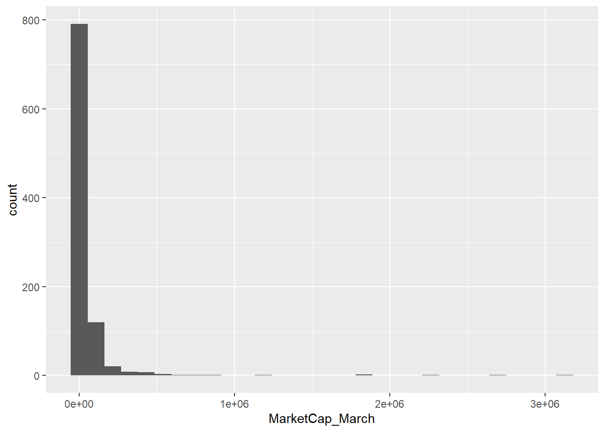
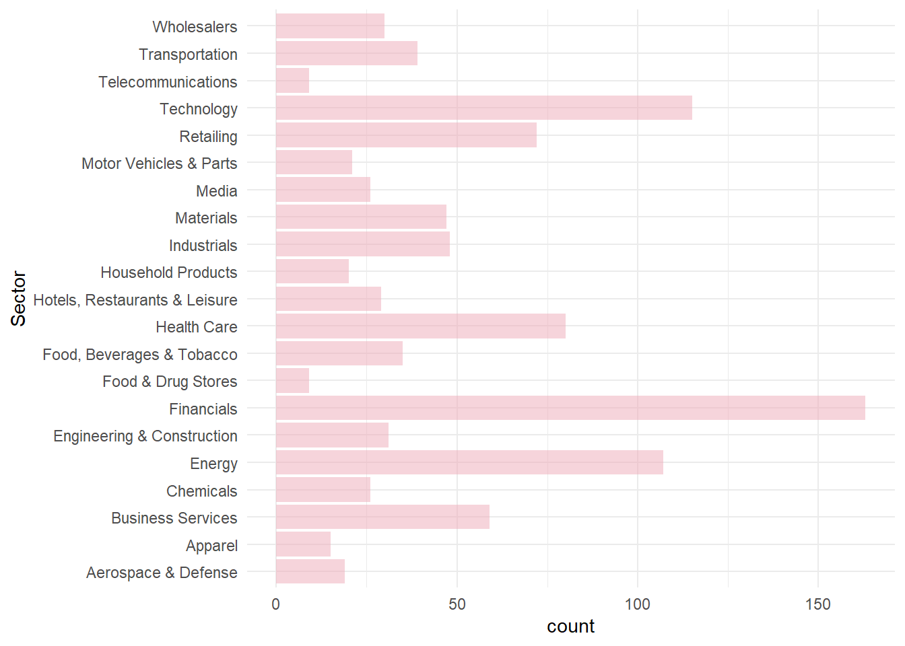
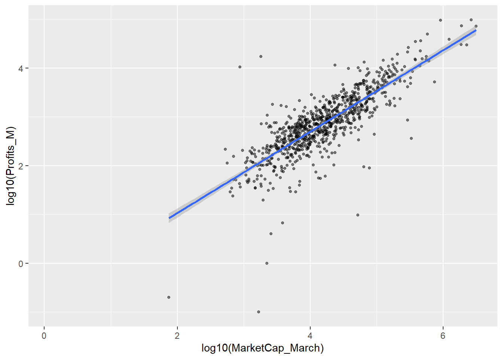
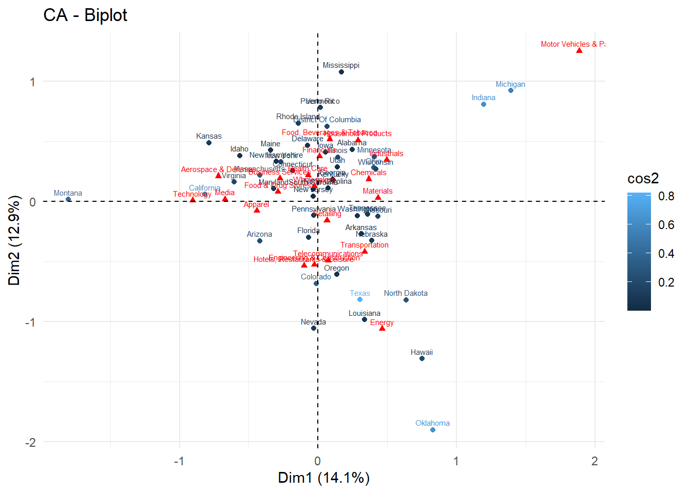
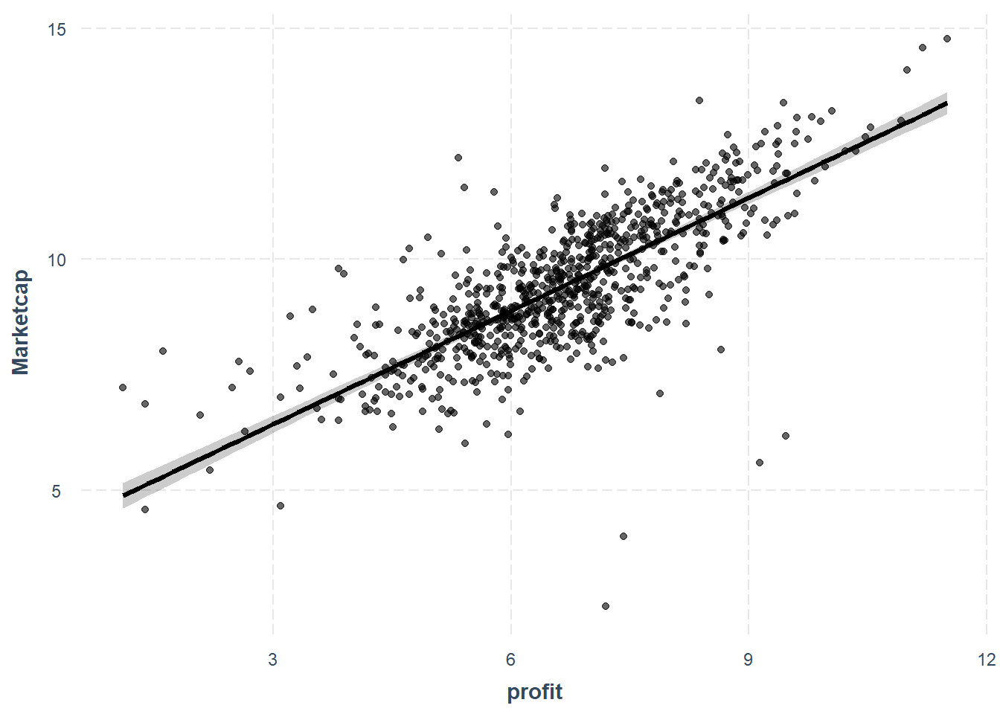

library(tidyverse) #outil de base(dplyr+ggplot+...)
library(rstatix) # pour tout les test en tidy...
library(FactoMineR) #ACP AFC et clustering
library(factoextra)
library(flextable) #pour faire de joli tableau
library(scales) #un accessoire de ggplotFortune 1000
Abstract
Ce papier introduit à l’utilisation de r dans l’environnement quarto pour les analyses statistiques fondamentales de la recherche en gestion. Il sert aussi de modèle (template) pour les travaux des étudiants. On examine des distributions, on calcule des moyennes, on les compare et on les teste, on calcule des corrélations. On explore quelques techniques d’analyses de données à la française et on conclue sur un peu d’économétrie
Keywords
r stat, ggplot, tests, regression, clustering
Introduction
Il nous faut des outils et des données.
Les packages
Notre boite à outils essentielle est tidyverse, de Wickham et al. (2019). On en découvrira l’univers ici
Lecture du fichier
Voici la source des données du Fortune 1000 de 2024 et celle de 2023 . On charge les fichiers et on les compile en un seul dataframe
df1 <- read_csv("fortune1000_2024.csv")|>
mutate(Year="2024") |>
select(-Worlds_Most_Admired_Companies)%>%
rename(MarketCap_March=MarketCap_March28_M,
Best_Companies=Best_Companies_to_Work_For)
df2 <- read_csv("fortune1000_2023.csv")|>
mutate(Year="2023")%>%
rename(MarketCap_March=MarketCap_March31_M)
df<- rbind(df1,df2)Analyse univariée
Une variable quantitative
On étudie la capitalisation des entreprises en 2024. Exeminons les statistiques essentielles : les centralités et les dispersions.
mean<-round(mean(df1$MarketCap_March, na.rm=TRUE)/1000,1)
median<-round(median(df1$MarketCap_March, na.rm=TRUE)/1000,1)On obtient donc :
- capitalisation moyenne : 50.8 milliards de $
- capitalisation médiane: 12.5 milliards de $
- écart type :
La distribution peut être représentée par un simple histogramme.
ggplot(df1, aes(x=MarketCap_March ))+
geom_histogram()
Avec quelques améliorations on obtient ceci:
ggplot(df1, aes(x=MarketCap_March/1000 ))+ #les données sont en millions , on les transforment en milliards
geom_histogram(fill="pink2", alpha=.5)+
labs(title="Distribution du chiffre d'affaires des 1000 de Fortune (2024)",
y = "Fréquence",
x="Chiffre d'affaires (en milliards de $)")+
theme_minimal()+
scale_x_continuous(trans='log10', labels = scales::label_comma())
Une variable qualitative
On commence à compter
table(df1$Sector)
Aerospace & Defense Apparel
19 15
Business Services Chemicals
59 26
Energy Engineering & Construction
107 31
Financials Food & Drug Stores
163 9
Food, Beverages & Tobacco Health Care
35 80
Hotels, Restaurants & Leisure Household Products
29 20
Industrials Materials
48 47
Media Motor Vehicles & Parts
26 21
Retailing Technology
72 115
Telecommunications Transportation
9 39
Wholesalers
30 Un diagramme en barre
ggplot(df1, aes(x=Sector, group= Year))+
geom_bar(alpha=.5, fill="pink2")+
coord_flip()+
theme_minimal()
en mieux
foo<-df1 %>%
group_by(Sector)|>
summarize(n=n())
ggplot(foo, aes(x=reorder(Sector,n), y=n))+
geom_bar(stat="identity",alpha=.5, fill="pink2")+
coord_flip()+
theme_minimal()
Corrélation de deux variables quantitatives
La capitalisation est l’actualisation du profit. On s’attend à ce que les deux variables soient fortement corrélées.
foo <- df1 |>
filter(!is.na(Profits_M) & !is.na(MarketCap_March))
r <-cor(foo$Profits_M,foo$MarketCap_March)
r[1] 0.8256856ggplot(foo, aes(y=log10(Profits_M), x= log10(MarketCap_March), group= Year))+
geom_point(alpha=.5, size=1)+
geom_smooth(method="lm")
Comparaison plusieurs groupes sur une variable quanti
Comparer 2023 et 2024.
ggplot(df, aes(x=MarketCap_March, group=Year ))+
geom_density(aes(color=Year))+
scale_x_log10()
test en t (student)
stat.test <- df %>%
t_test(MarketCap_March ~ Year) %>%
add_significance()
stat.test# A tibble: 1 × 9
.y. group1 group2 n1 n2 statistic df p p.signif
<chr> <chr> <chr> <int> <int> <dbl> <dbl> <dbl> <chr>
1 MarketCap_March 2023 2024 959 959 -1.46 1744. 0.143 ns Analyser deux variables qualitative
Tableau croisé
Le point de départ est l’analyse du tableau qui croise les deux variables
library(flextable)
Crosstabs<-table(df1$HeadquartersState, df1$Sector)
#flextable(Crosstabs)
# Calculate the chi-square statistic
chi_square_test <- chisq.test(Crosstabs)
# Print the results
print(chi_square_test)
Pearson's Chi-squared test
data: Crosstabs
X-squared = 1800.7, df = 920, p-value < 2.2e-16Analyse des correspondances
CT<-Crosstabs
ca=CA(CT, graph=FALSE)
fviz_ca_biplot(ca, col.row="cos2", labelsize = 2) +
theme_minimal()
ggsave("image/ca.jpg", width = 27, height = 18, units = "cm")Analyse mutivariée descriptive
ACP
Clustering
grouper les Etats en famille similaire par leur profil d’entreprise
Eléments d’économétrie
régression multiple
le modèle s’écrit1 de la manière suivante :
\[ y_i=\beta_0+\sum_{j = 1}^{k} \beta_jx_{i,j} + \epsilon_i \]
modèles à décomposition d’erreurs
C’est le cas des panels par exemple: chaque individu observé sur la variable \(j\) l’est dans le pays \(g\) et au moment \(t\) . On parle aussi de modèles hiérarchique.
\[ y_{i,g}=\beta_0+\sum_{j = 1}^{k} \beta_jx_{i,j,g} + \rho_t+\mu_g+\epsilon_i \] ## premier exemple simple
library(tidyverse)
df2$Marketcap<-log(df2$MarketCap_March)
df2<-df2 |>
mutate(profit=ifelse(Profits_M<0, -log(Profits_M), log(Profits_M)))
fit1<-lm(Marketcap ~ profit+ Assets_M, df2)
fit2<-lm(Marketcap ~ profit+ Assets_M+RevenuePercentChange, df2)
library(jtools)
export_summs(fit1, fit2)| Model 1 | Model 2 | |
|---|---|---|
| (Intercept) | 3.99 *** | 4.11 *** |
| (0.16) | (0.17) | |
| profit | 0.82 *** | 0.82 *** |
| (0.02) | (0.02) | |
| Assets_M | -0.00 *** | -0.00 *** |
| (0.00) | (0.00) | |
| RevenuePercentChange | -0.01 *** | |
| (0.00) | ||
| N | 831 | 825 |
| R2 | 0.58 | 0.59 |
| *** p < 0.001; ** p < 0.01; * p < 0.05. | ||
plot_summs(fit1, fit2)
effect_plot(fit2, pred = profit, interval = TRUE, plot.points = TRUE)
Autres modèles
- sur variable binaire : modèle logit
- sur variable de dénombrement : modèle de poisson
- sur variable de durée : modèle de Cox
Références
Wickham, Hadley, Mara Averick, Jennifer Bryan, Winston Chang, Lucy McGowan, Romain François, Garrett Grolemund, et al. 2019. “Welcome to the Tidyverse.” Journal of Open Source Software 4 (43): 1686. https://doi.org/10.21105/joss.01686.